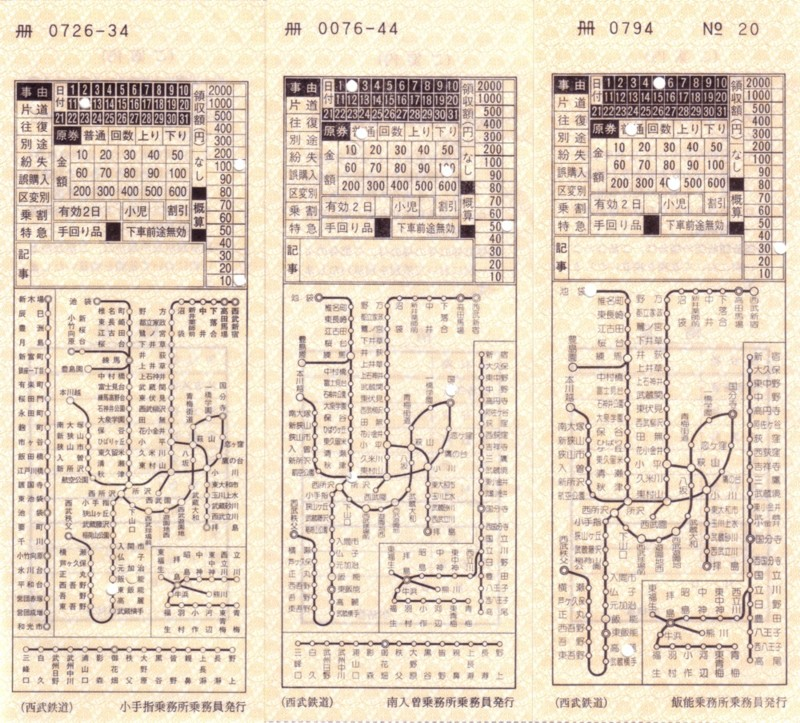
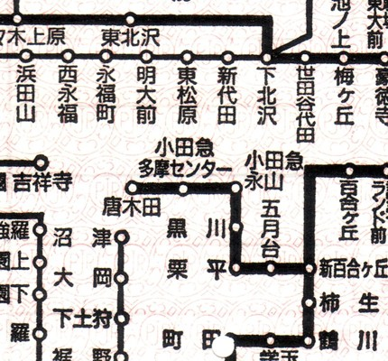
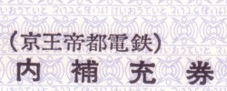

いわゆる「乗り越し切符」です。 POSシステムが普及してからはレシート風や切符風のすっかり味気ないものになってしまいましたが、 昔は路線図が入っていたなかなか楽しいものでした。 現在でも絶滅したわけではなく、出札補充券はシステム障害の際の対応用やコンピュータで対応できない 切符の発行用にに各駅に常備されています。 たとえば経由線区が20を超えるとコンピュータで発券ができないため、出札補充券がもらえます。
同一の鉄道会社でも車掌区や時期によって地図が違っています。
↑ 西武鉄道の補充券。右から小手指乗務所(池袋線)・南入曽乗務所(国分寺線)・飯能乗務所(秩父線)。よく見ると3枚とも地図の範囲が違っています。とはいえなぜ飯能乗務所に秩父鉄道が入っていないのかは謎。
路線の新規開業や廃止・駅名の変更によっても地図が変わります。
|  | |
|
小田急電鉄の唐木田延伸前。 小田急多摩センターが終点になっています。 |
小田急電鉄の唐木田延伸後。 路線図の位置が下にずれ、唐木田が追加されています。 |
社紋が変わると台紙が変わることがあります。
|  | |
|
京王電鉄の社紋変更前です。 |
京王電鉄の社紋変更後です。 |
オリエンテーリング用の地図は、行政図などの原図に現地調査の調査結果を加筆・修正すことにより作ります。 作図はCADにより行い、多色印刷により印刷します。
|
調査原図です。行政図をスキャンしたものを使用しています。 GPSによる現地調査の結果を重ねてあります。(右下の線や×印) 青色の線(磁北線)の間隔は250mです。 |
|
|
調査原図を基にした実地調査の結果です。 調査原図の上にメモ用の耐水性フィルムを重ね、 山の中を実際に歩いて等高線の形状や植生(通りやすさ)をメモしてゆきます。 この面積を調査するのに、10日程度掛かります。 |
|
|
実地調査の結果を作図したものです。 以前はほんとに作図用のフィルムの上にペンで作図していましたが、 最近はCADになりました。 |